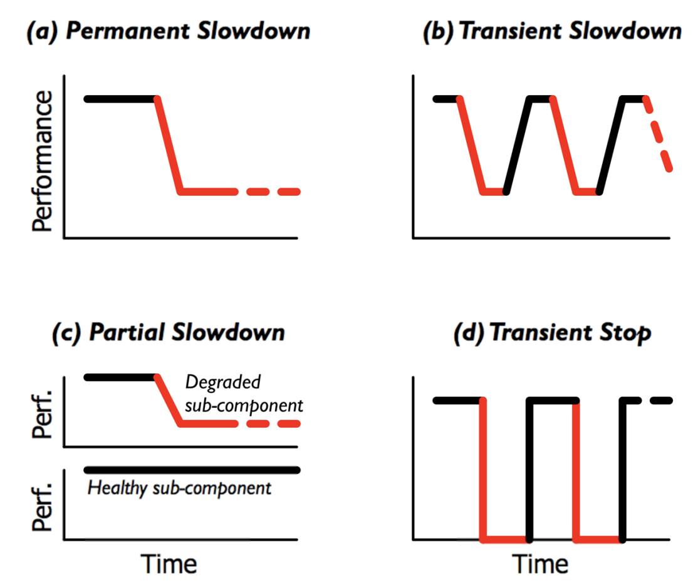

持久存储：性能
存储：只要 CPU (DMA) 能处理得过来，我就能提供足够的带宽！
- Computer System 的 “industry” 传统——做真实有用的系统

持久存储：可靠性
任何物理存储介质都有失效的可能
- 临时失效：Kernel panic；断电
- 永久失效
- 极小概率事件：战争爆发/三体人进攻地球/世界毁灭 😂
- 小概率事件：硬盘损坏 (大量重复 = 必然发生)

Failure Model (1): Fail-stop
磁盘可能在某个时刻忽然彻底无法访问
- 机械故障、芯片故障……
- 磁盘好像就 “忽然消失” 了 (数据完全丢失)
- 假设磁盘能报告这个问题 (如何报告？)
你的磁盘发生 fail-stop 会对你带来什么影响？
Failure Model (2): System Crash
真实的磁盘
- bwrite 会被磁盘缓存，并且以不可控的顺序被 persist
- 在任何时候，系统都可能 crash
- bsync 会等待所有 bwrite 落盘

System crash 会对你带来什么影响？
- 真的没有影响？(Model checker 告诉你影响)
更多的 Failure Mode
Data corruption
- 磁盘看起来正常，但一部分数据坏了
- An analysis of data corruption in the storage stack (FAST'08)

Fail-slow
- Firmware bug; device error; wear-out; configuration; environment; ...
- Fail-slow at scale: Evidence of hardware performance faults in large production systems (FAST'18)
- 我亲历过 fail-slow 的 HDD!